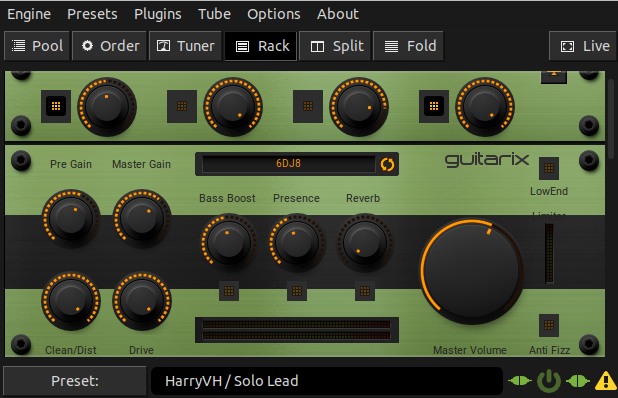
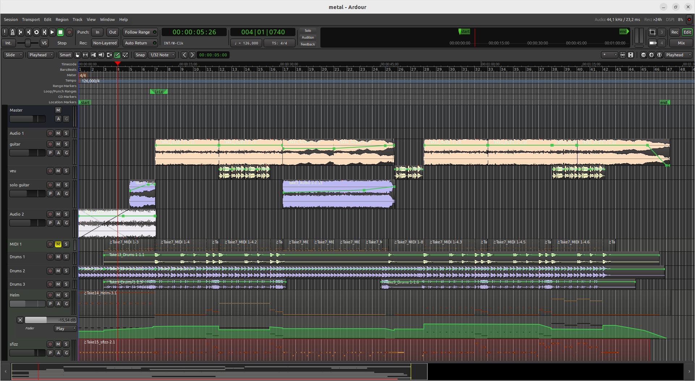
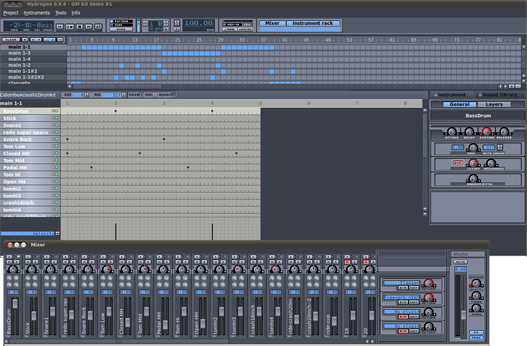

Utilitzant una taula de mescles amb sortida USB i entrades per a guitarra i micro, podem gravar per pistes els nostres propis temes amb un PC. És convenient que la taula de mscles tingui sortida USB per connectar-la directament al PC.
Quan treballem sobre sistema operatiu gnu-Linux, podem utilitzar el servidor d'àudio Jack per interconnectar entrades i sortides tant dels programes com del maquinari que estem utilitzant. Així amb el Jack Control al costat del processador d'efectes Guitarix, podem afegir efectes a temps real mentre toquem amb la guitarra o el baix.
Amb els programes Audacity o Ardour podem gravar el senyal de la guitarra o el baix procedent del Guitarix i a la vegada escoltar la caixa de ritmes Hydrogen Drum Machine. El programari Audacity ens permetrà crear tantes pistes com vulguem. També és possible enregistrar una pista alhora que escoltem les pistes gravades anteriorment o escollir quines volem escoltar.
Després de gravar totes les pistes (bateria, baix, guitarra, veu, etc...) podrem editar, afegir efectes i equalitzar-lo. Per a una edició similar a programes com Pro Tools existeix Ardour ( gnu-Linux o Os Mac), que treballa amb teclats MIDI i és compatible amb una gran varietat de bancs de so i efectes, fins i tot altres sistemes operatius.
Software
Jack Control (qjackctl.sourceforge.net)
Gestor de connexions entre programari i maquinari. Amb aquesta eina podem gestionar les connexions entre els diferents programes. També gestionem les sortides i les entrades d'àudio del nostre ordinador. Funciona sobre gnu-Linux.
Guitarix (guitarix.org)

processador multi efectes per a guitarra i baix. Inclou els efectes clàssics com el compressor, equalitzador, flanger, chorus, delay, echo, reverb, phaser, wah-wah i distorsió entre d'altres. Funciona sobre gnu-Linux.
Ardour (ardour.org)

Enregistrament de so multipistes. Monitoritza els nivells d'enregistrament a temps real. Permet l'edició de temes amb tantes pistes com vulguem. Utilitza efectes LADSPA o VST. Funciona tant sobre gnu-Linux, OsMac i Microsoft Windows.
Hydrogen Drum Machine (http://www.hydrogen-music.org)

Caixa de ritmes amb diferents bancs de so i efectes LADSPA a temps real. Exporta les cançons o patrons a MP3, WAV i OGG. Funciona sobre gnu-Linux, però també està disponible per a Microsoft Windows.
Sistema operatiu
Les distribucions Ubuntu i Debian inclouen aquests programes, que citem a l'article, als seus gestors d'instal·lació de programes. De manera que és molt fàcil instal·lar-los y actualitzar-los.
A part l'ús de Jack Control us permet interconnectar els programes d'àudio que estiguin en funcionament, a Microsft Windows o iOS Mac no existeix tot el programari lliure o gratuït equivalent. T'hauràs d'espavilar amb el tauler de control o el programari que vingui amb la teva targeta d'àudio.
Utilitzar gnu-Linux, també te l'avantatge de poder córrer sobre ordinadors poc potents, sense experimentar gaire latència ni excessiu consum de la capacitat de la nostra CPU, ja que els programes utilitzats tenen interfícies senzilles que no saturen la capacitat de rendiment del nostre PC.
Exemples
Material utilitzat en la gravació
En tot aquest article no hem fet referència a cap marca de PC, tampoc de targetes d'àudio o taules de barreges, perquè no és la nostra intenció promocionar-ne unes en concret o dir quina és la millor. De tota manera et citem el material que hem utilitzat per testejar tot el programari esmentat anteriorment:
- Guitarra elèctrica: Maison (2 pastilles amb doble bobina).
- Baix elèctric: Àsia (tipus Fender Standard Precision).
- Taula de mescles: Yamaha MG10XU
- PC AMD FX(tm)-4100 Quad-Core Processor × 4 con 16 Gbytes de RAM (64bit).
- Targeta gràfica: Nvidia con 256 Mbytes de RAM.
- Targeta d'audio: Soundblaster
- Sistema operatiu: gnu-Linux Ubuntu 22 LTS